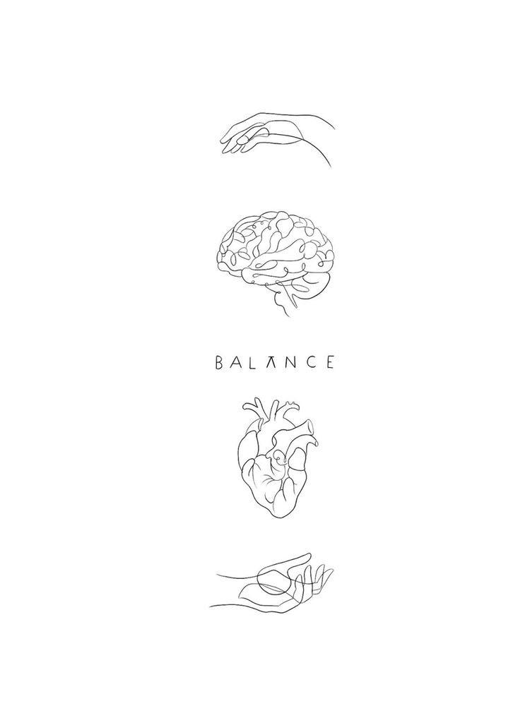

Creado: Josmelly Garcia, tambien conocida como Melly

Salud Mente? que importancia deberia tener esto y que poca atencion se le otorga...
En esta pagina el princial enfoque sera que puedan ver los diferetes estados, cambios, emociones y
circunstancias que los jovenes-adolencentes pasan y como esto a llevado a situaciones irremediables; como lo son
el suicidio, el autolesionarse, alteraciones del sueño, ataques de ansiedad o panico y un enorme sentimiento de
culpa y vacio. Donde los adultos (sobre todo padres) son totalmente lejanos a esa realidad.
Uno como jovene-adolencente se pregunta haci mismo, porque de repente siente con tantos cambios de humor o
sentimientos, y sobre todo porque ninguno de esos sentimientos reflejan felicidad sino todo lo contrario.
¿En que momento no me di cuenta que estaba asi?...
¿Como deje pasar sus señales de que no estaba bien?..
Detras del espejo
En en el siguiente texto, estara algo que escribi respecto a el tema, lo inicie cuando estaba en un estado en el
que lo unico que sentia era un vacio inmenso, por lo cual le quise dar voz a eso que estaba pensando y sintiendo
Un recuentro con mi conciencia
Este texto habla del lazo que hay entre el silencio y las voces en uno mismo, esto lo escribi en un momento donde
no sabia cual estado era peor si estar en silencio o escuchar lo que mi concienciatenia que decirme